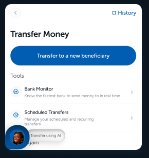
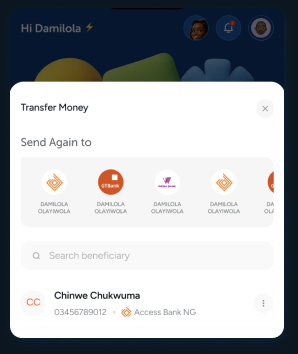
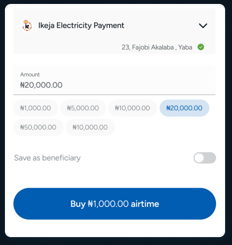
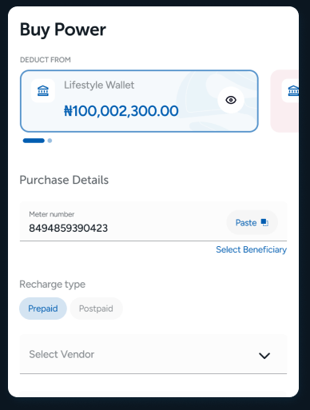
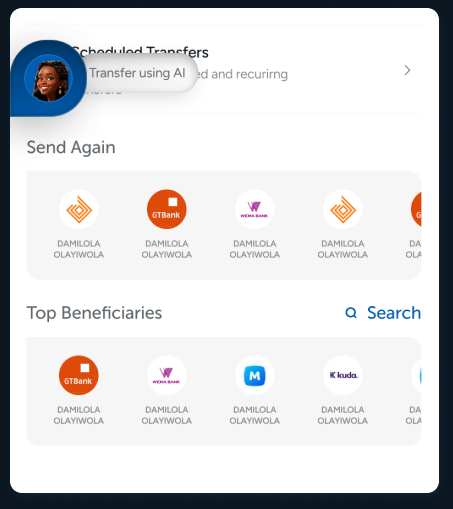
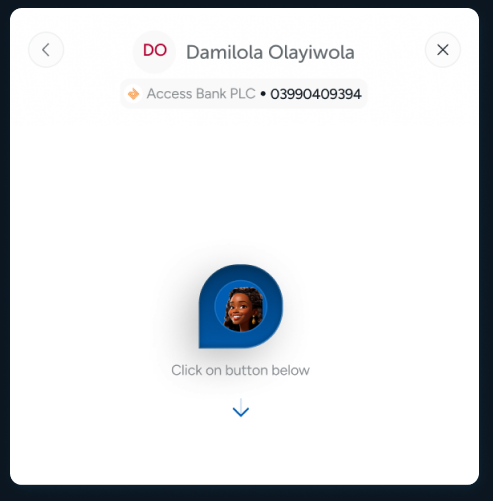
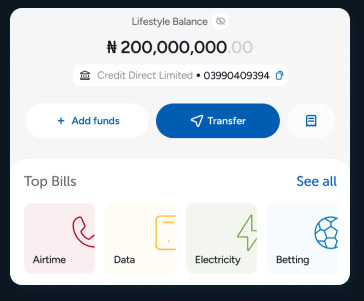
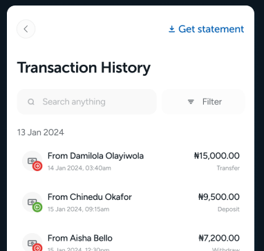
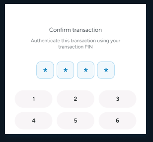
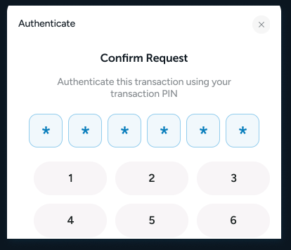

Credit Direct · UX Research
Key findings, priority issues, and recommendations from prototype testing of the CDL Mobile App.
01 — Overview
Context
The CDL Mobile App is being redesigned in V2 to simplify everyday financial tasks — airtime, data, bills, transfers, and statements. Before shipping the next iteration, we tested the prototype with five users to validate the bill payment and transfer flows, surface friction, and prioritise what to fix.
Why this report exists
02 — Methodology
Nine core flows across the V2 prototype. For airtime and transfer we compared two route options (Route 1 vs Route 2) to see which path users preferred.
Airtime & data
Two routes tested side by side.
Electricity bill payment
Meter type, meter number, payment.
Betting wallet funding
Top-up flow and success feedback.
Transfers
Two routes, plus AI-assisted transfer.
Beneficiaries
Adding new and selecting top beneficiaries.
Transaction history
Browsing, filtering, revisiting.
Bank statement
Requesting, custom range, output options.
Receipts
Viewing and sharing transaction receipts.
9 flows total
Moderated prototype walkthrough
Participants
Mixed levels of experience with mobile financial apps. Most had used at least one of: Opay, Moniepoint, PalmPay, Cowrywise, Access, Piggyvest, or Pocket App. One participant had never used an app of this kind before.
Why this mix: The group covers both confident and first-time users of financial apps, so findings reflect a real range of behaviour rather than only experienced power users.
Method
What we listened for
04 — Executive Summary
Most core flows worked. Airtime, data, electricity, transaction history and parts of transfer were easy to complete.
Route 2 was preferred for airtime and transfer because it cut manual entry and showed options up front.
Copy and feedback mismatches in electricity and betting are eroding trust on screens that involve money.
Add new beneficiary, top beneficiaries, and bank statement entry points are not discoverable enough.
Users want clearer confirmation and explicit control before any payment, especially in electricity, transfer, and AI-assisted transfer.
Across sessions, these flows were completed without confusion or assistance.
Airtime
Quick to complete on both routes; Route 2 felt faster.
Data
Plan selection and purchase finished without hesitation.
Electricity
Core path worked, aside from confirmation gaps.
Transaction history
Easy to browse and find past transactions.
Parts of transfer
Confirmation screen helped users verify recipient before paying.
Section 03
Seven patterns that showed up across sessions — what users did, what they said, and why it matters for V2 direction.
Key Finding 01 · 1 of 7
What users did
When asked to compare two route options for airtime and transfer, most participants picked Route 2. They said it felt faster, more flexible, and required less manual entry.
Evidence from sessions
Why it matters
Route 2 reduces effort and gives users more confidence selecting recipients. The structure still needs to make clear what each option is and why it's being shown.

vs
Key Finding 02 · 2 of 7
What users did
Participants noticed CTAs and success messages that referenced the wrong service.
Evidence from sessions
Why it matters
When users are moving money, mismatched copy makes them question whether the right transaction is being completed. It's avoidable, and it costs trust.

Key Finding 03 · 3 of 7
What users did
Participants looked for a way to verify recipient or account details before committing to a payment — especially in electricity and transfer.
Evidence from sessions
Why it matters
Without confirmation, users hesitate or risk paying the wrong account. Payment errors are high-cost; a single confirmation step prevents most of them.

Key Finding 04 · 4 of 7
What users did
The top beneficiaries section read as a list of banks or bank accounts — not as the people the user had recently sent money to.
Evidence from sessions
Why it matters
A shortcut feature loses its value if users don't recognise it. Recipient names should lead; the bank should be supporting detail.

Key Finding 05 · 5 of 7
What users did
Participants questioned how the AI knew who to send money to, and what would happen if their phone was lost or used by someone else.
Evidence from sessions
Why it matters
The idea is interesting, but the current flow doesn't explain enough. Without visible controls and confirmation, users may dismiss it as risky.

Key Finding 06 · 6 of 7
What users did
One participant first looked for bank statements on the More screen rather than next to the transfer CTA where the entry point lives.
Evidence from sessions
Why it matters
The feature has clear value, but a hidden entry point and email-only output don't match how users want to use it.


Key Finding 07 · 7 of 7
What users did
A participant noticed that the transaction PIN for bank statement was 6 digits, while bill payment and transfer flows used 4 digits.
Evidence from sessions
Why it matters
Inconsistent PIN patterns make users pause and second-guess the flow. Either align the lengths, or explain the difference where it appears.


Section 04
Ten issues, ranked by impact on task completion. Critical items block users from finishing what they came to do.
Copy and feedback mismatch in electricity & betting
Users may question whether they're paying for the right thing.
Stuck state in Route 2 transfer
Users may not know the next step without assistance.
No recipient confirmation in electricity
Payment errors are high-risk; users need confidence before confirming.
Top beneficiaries not visually clear
A shortcut feature loses value if users don't understand it quickly.
AI transfer needs clearer control & security
Users may reject the feature if it feels unsafe or too automatic.
Bank statement access not discoverable
Users may miss the feature even if it's useful.
PIN length inconsistency
May cause hesitation or input errors.
Download / share missing from statement
Output may not match how users want to use it.
Electricity downtime feedback
Users need to know if it's the app, provider, or network — similar to a bank monitor feature.
Section 05
Specific actions tied to findings.
01
Fix all mismatched copy and success feedback
02
Show recipient/account confirmation before payment
03
Make "Add new beneficiary" easy to find
04
Redesign top beneficiaries to look like people
05
Add clearer checks to AI-assisted transfer
06
Fix confusing input states in Route 2 transfer
07
Improve bank statement discoverability
08
Add download and share options for statements
09
Confirm whether PIN length should be 4 or 6 digits
10
Add service downtime feedback
Section 06 — Closing
Before the next design iteration, the team should focus on these four moves — in this order.
Resolve copy and confirmation gaps
Fix every mismatched CTA and success message in electricity and betting. Add recipient/account confirmation before payment in electricity and transfer.
Redesign top beneficiaries in transfer
Redesign top beneficiaries so they read as people, not banks — lead with recipient name and avatar.
Make AI-assisted transfer feel safe
Require explicit confirmation. Don't pre-fill a beneficiary without a visible reason.
Re-test with the prototype gaps closed
Wire up "Select from contact," correct input states in Route 2 transfer, and re-run the same flows with two new participants.